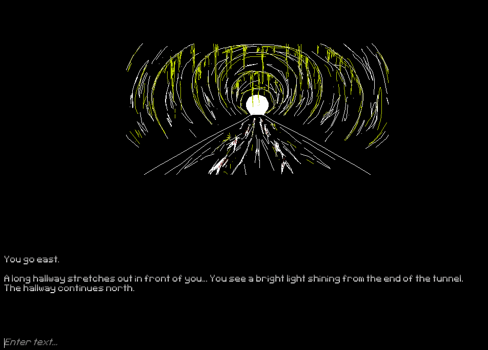
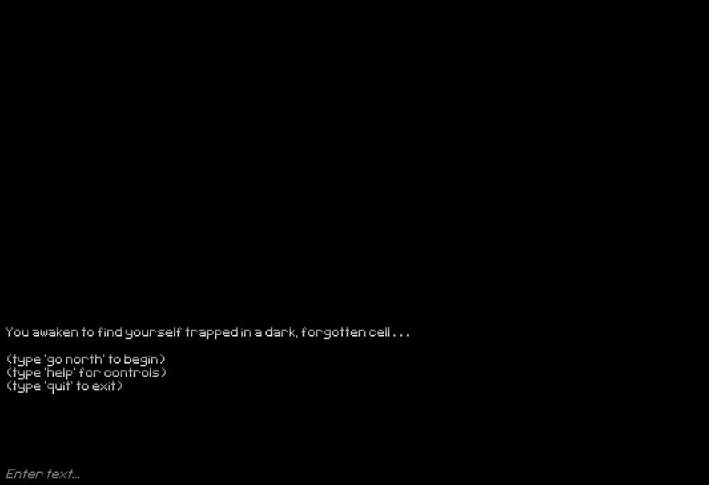

Enter the Dungeon
Enter the Dungeon is a short, solo text-adventure project I made during the COVID-19 pandemic.
Project began in February 2020 and was finished April 2020. The game can be viewed on itch.io here
My work on Enter the Dungeon:
- Wrote and updated clear and concise documentation, which can be found here
- Utilized ambient sound design, audio cues, and grungy visuals to create an unsettling atmosphere and evoke feelings of nervousness and curiosity within players
- Performed research on examples of other text-based games and how they utilized art and sound to maximize effectiveness
- Rather than have music, I used only ambient soundtracks juxtaposed with harsh audio cues as they better enhanced the unsettling atmosphere of the dungeon and allowed for more creative liberties in the sound-mixing process.
- I opted for creating multiple different audio cues (such as scraping stone or the crackling of flames) rather than a single sound to indicate something has changed to prevent breaking immersion while also providing players with increasingly effective feedback that enhanced the feeling of nervousness I wanted to portray.
- I added sound cues only to key parts of the game (primarily with the 'use' action) to both clearly indicate when the player has performed some sort of changing action, but also allow the audio itself to tell its own 'story' and further enhance the unspoken lore and foreshadow later aspects of the dungeon.
- I used the visuals as a means of enhancing the written text of the game by having certain parts of the image disappear or change depending on the player's actions (picking up an item, destroying a blockade, activating a key).
- I used mainly white and black for the art and purposefully added color only to important aspects of the room as a way to both guide players through the puzzles, while also drawing attention to unsettling details to further enhance the experience.
- Built upon code to incorporate and expand support for both audio and visual functionality as well as new player commands (a write-up of the technical documentation can be found here)
- I expanded the framework of the tutorial I referenced by writing scripts for new input actions (quit, help, room, etc) to fix problems players commented on during playtesting pertaining to text-scrolling, as well as provide an immersive option to reference controls or quit the game.
- I further built upon the project by allowing for image and audio support, which I did by expanding upon the 'Room' class. I added an option for any room to have a sprite and audio track assigned to it, which can be easily changed or removed for ease of implementation.
- Additionally, I expanded upon the functionality of interactable objects (such as a key or torch) to allow audio cues or visual changes to occur after using them. This allowed me to incorporate more detailed audio and visual content, as well as create 'clutter' items that the player can examine, but mechanically have no use. This made the dungeon feel more organic and populated.



- Developed a method to plan and design puzzles modularly and streamline the design process
- Project was initially concepted as a point-and-click puzzle game
- Needed to a way to constrain and guide the puzzle creation process
- Had to be compatible with pre-existing framework
- Process:
- Took reference from previous projects to develop a 'trunk-and-branches' design method
- Each puzzle section would have a 'trunk' room, with offset 'branching' rooms. The solution to the section would always be opening the door/blockade in the 'trunk' room.
- Branching rooms would contain objects or keys that led closer to the item needed to unlock the trunk room
- Created folders and naming schemes in editor to manage and organize assets used in each branch
- Results:
- Having a 'trunk' room gave players an obvious goal that could be presented to them immediately to prevent confusion and provide a sense of direction.
- 'Trunk-and-branch' puzzle structure streamlined the design process by dividing up the puzzle into manageable chunks (create an obstacle for the trunk first, then as many branches as desired to reach it).
- Easy to diagram and sketch for quick brainstorming and prototyping.
- Puzzles could be easily shifted into different orders by simply changing which 'trunk' room occurs first.